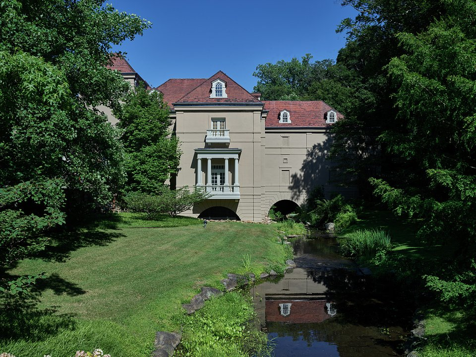

Downtown · Grand hotel
Hotel du Pont
A grand 1913 hotel in downtown Wilmington.
Official details for Hotel du PontGardens, mansions and a grand hotel.
The du Pont family left the Brandywine Valley full of extraordinary gardens and houses. Tour Winterthur’s garden and museum, the French-style Nemours Estate and the original du Pont powder works at Hagley, spend a day at Longwood Gardens across the Pennsylvania line, and stay at the grand Hotel du Pont or a village inn at Montchanin.

In our plane it’s a short flight.
Where we’re staying Dinner Things to do The plan
I’ll handle the flight planning; you handle the fun planning! Pilot view
Time illustration: direct distance at 150 KTAS plus 15 minutes for departure and arrival, matching the discovery page. Use ForeFlight for your actual flight plan.
Check the weekend weather at both ends → Flight category, your minimums and the crosswind on the best runway.
More in Aviation & getting around below. Crew cars change often: call the FBO before you go. How to have a rental car waiting at the FBO · Know something we missed? Tell us.
KILG, Wilmington Airport, is a towered airport about 15 minutes from downtown and 25 minutes from Winterthur.
Wilmington Airport, New Castle, DE
Wilmington has more than one FBO. Brief the Philadelphia Class B. Confirm hours, fees and cars. No live fuel price is shown.
Mid-Atlantic coastal weather: summer haze and afternoon thunderstorms, sea fog in spring, and busy airspace near Philadelphia, Baltimore and Dover AFB. About 390 nm from Myrtle Beach.
Essington, PA · 610-521-3530
Water lanes: 11W/29W 9,100 × 250 ft on the Delaware River, about 13 nm from Wilmington.
VFR only, no night operations. Call 610-521-3530 before arrival. Contact Philadelphia Approach for traffic advisories and check the Philadelphia Class B chart for the landing area; debris near the gravel ramp. (FAA chart supplement remarks.)
You will need a ride to the Brandywine Valley.
Water landing rules, conditions and docking change; call the base and check the chart supplement before you go.
Rates and availability need travel dates. Spring garden weekends and holidays book early.
A grand 1913 hotel in downtown Wilmington.
Official details for Hotel du PontCottages in a 19th-century workers’ village.
Official details for Inn at Montchanin VillagePrices and availability for your dates, through our partner Stay22. This is an affiliate link: we may earn a commission at no cost to you. The picks above are never paid.
Reserve weekend dinners.
French brasserie dining in the hotel.
Official details for Le Cavalier at Hotel du PontThe restaurant at Montchanin Village.
Official details for Krazy Kat’sTwo estates a day is plenty.
This prototype links to the local visitor site. It does not yet match events to your travel dates.
Azaleas and blooms at Winterthur.
Winterthur for Spring gardensLights and conservatory displays.
Longwood for A Longwood ChristmasIlluminated fountains at Longwood.
Longwood for Fountain showsCheck the local calendar when choosing a weekend, and confirm dates and tickets with the organizer.
A sample long weekend: gardens and estates. No bookings or availability confirmed.
Land at KILG mid-morning.
Winterthur.
Hagley, then back to the airport.
Land at KILG, subject to weather, your fuel stop and your actual flight plan.
Winterthur.
Dinner at Krazy Kat’s.
Longwood Gardens.
Hagley Museum.
Dinner at Le Cavalier.
Nemours Estate.
Allow time at the airport.
Summer thunderstorms build in the afternoon; leave early.
Longwood Gardens.
Nemours Estate.
Dinner at Le Cavalier.
These details make the difference between an appealing list and a usable getaway.
Lodging and garden tickets first.
About 395 nm: a comfortable nonstop.
Brief the Philadelphia Class B.
April to June; December for Longwood.
Picks and links reviewed by WingAway Weekends. Hours, prices, menus and availability change often, so confirm directly with each place before booking. Spotted something out of date, or have a favorite we missed? Email us at hello@wingawayweekends.com.
WingAway Weekends helps you discover the destination. Use ForeFlight and current official aviation information for route, performance, weather, NOTAMs and preflight decisions. Flight planning and PIC responsibility stay with the pilot.